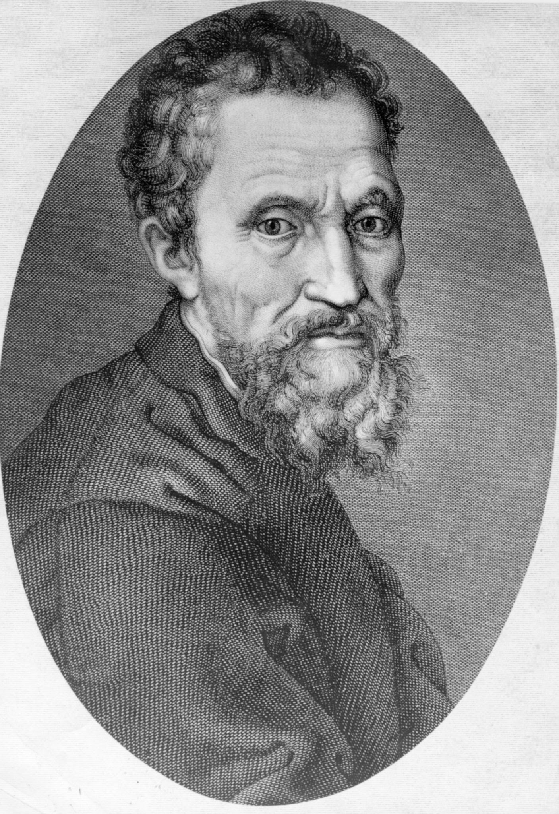
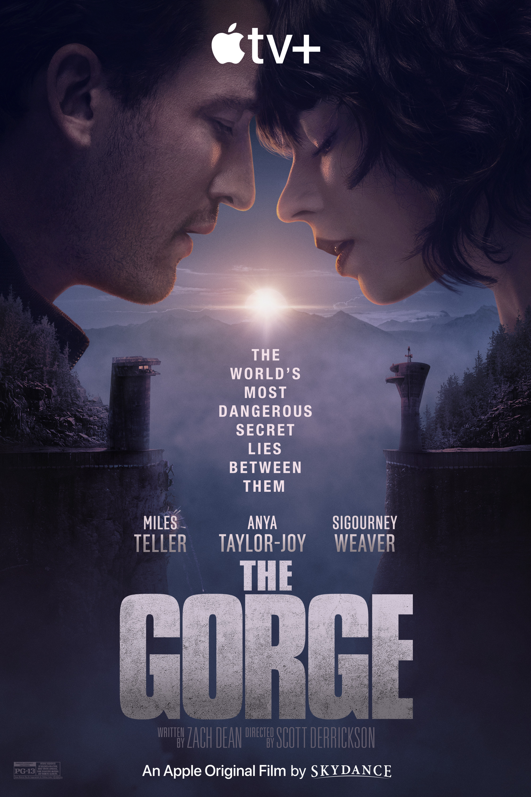

Încă din timpurile antice, veritabilitatea reprezintă cea mai scumpă însușire a unui obiect, transformându-l în artă. Ideile unice, originale, precum pictarea pe o pânză sau modelarea unui aliaj în cele mai mici detalii au făcut diferența - transpunerea unei idei din mintea omului în ceva fizic, palpabil, vizibil ochiului.
Dex-ul zice că sinceritatea înseamnă lipsa de prefăcătorie sau de viclenie, onestitate, inocență. Cu toate acestea, etimologia acestui cuvânt se trage din latinescul “sine cera” - tradus “fără ceară”. Încă de pe vremea lui Michelangelo  , sculptorii obișnuiau să ascundă micile defecte ale lucrărilor turnând ceară topită în fisuri. Trucul respectiv era, desigur, nepermis. Astfel, etalonul calității pentru o operă de artă devenise o plăcuță cu o inscripție de lemn “sine cera”. Chiar și în zilele noastre, adaptând expresia, ne semnăm scrisorile “Cu sinceritate, ” - o mărturie precum că vorbele noastre sunt pure, sincere, “fără ceară”.
În antiteză, secretele au stârnit întotdeauna o dorință mistică de a le afla, sau, dacă sunt ale tale, de a le proteja. Sunt o multitudine de motive pentru nașterea unui secret, de la o întâmplare rușinoasă de când erai mic până la conspirații întregi.
Un astfel de secret stă la baza filmului “The Gorge”  , pe care l-am privit împreună cu băiatul cârlionțat. Filmul, apărut în februarie anul acesta, îi are în rol principal pe actrița britanică-americană Anya Taylor-Joy și Miles Teller . Este un film care îmbină romanța, acțiunea, știința și fantasticul și care te agață din primele minute. Destul de previzibil, cuplul se angajează în aflarea unor răspunsuri, descoperirea marelui secret. Și atunci mă întreb, la fel de previzibil, care este termenul de expirare a unui secret?
Arta, cinematografia și simbolistica ne demonstrează, mai alegoric, că toate secretele tind să iasă la suprafață. Sinceritatea câștigă, iar și iar. Trebuie doar să o accepți. Să fii onest cu tine, pentru că doar asupra secretelor tale ai puterea de a alege termenul de expirare.
Poate ar trebui să revenim la scrierea unei scrisori. Poate ar trebui să petrecem mai multe nopți, uitându-ne în gol, rămași singuri cu gândurile și secretele noastre. Ar trebui să șoptim mai des, să visăm mai mult, să fim fericiți mai simplu. Dar ne asumăm, maturi și vaccinați fiind, că suntem imperfecți - cu nuanțe de gri, cu spini și petale de trandafir, cu zâmbete sincere și secrete sub pleoape. Și exact din aceasta cauză, suntem frumoși.
Cu sinceritate,
-AE